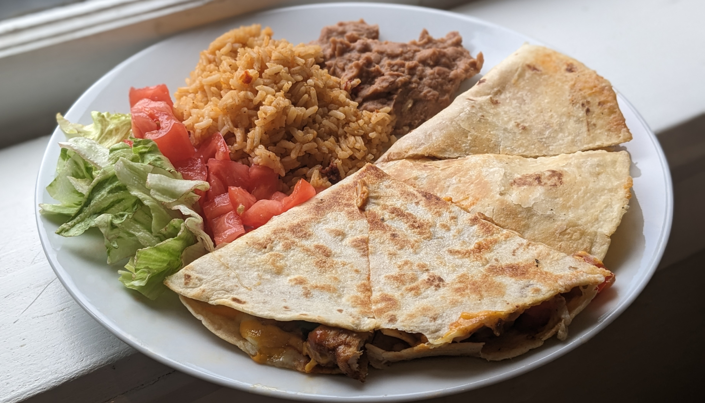

Fajita Quesadilla

Author: Derek Nichols |
Cooked: June 6, 2023
Yields: 4 Servings | Prep Time: 15 Minutes | Cook Time: 20 Minutes
Ingredients
- 1 Tbs chili powder
- 1 tsp cumin
- 1 tsp salt
- 1 tsp black pepper
- 1/2 tsp paprika
- 1/2 tsp garlic powder
- 1/4 tsp onion powder
- 1/4 tsp dried oregano
- 1/8 tsp cayenne pepper --------------------------
- 1/2 lb chicken tenderloins
- 1/2 lb large deveined shrimp, thawed
- 1 small white onion, diced
- 1 poblano pepper, diced
- 1 red bell pepper, diced
- 3 Tbs olive oil, divided
- Salt, to taste
- 4 flour burrito tortillas
- 2 c. Mexican cheese blend
- 2 c. cheddar jack cheese
- Hot sauce
Taco Seasoning
Fajita Quesadillas
Directions
- Combine the spices for the taco seasoning and set aside. Store any extra in an airtight container for up to 6 months.
- Remove the tendon from the chicken tenderloins and cut into bite-sized pieces (~0.75"). Coat with 1.5 Tbs of the taco seasoning and mix to cover all surfaces.
- Peel the shrimp, remove the tails, and pat dry with paper towels. Add the remaining taco seasoning to the shrimp and cover.
- Add 1 Tbs of olive oil to a pan and then add the chicken, stirring occasionally until cooked through. Remove from pan.
- If necessary, add additional olive oil to the pan. Add the shrimp in a single layer. Cook on one side until the shrimp is no longer translucent halfway up. Flip the shrimp and cook on the other side until cooked through. Remove from the pan.
- Add a tablespoon of olive oil to the pan, and add the onions and peppers. Season with salt to taste, and cook to preferred level of doneness making sure to scrape and incorporate the meat seasonings from the bottom of the pan.
- In a separate pan, spray with oil and place a flour tortilla. Add a layer of the Mexican cheese blend (~1/3-1/2 cup), top with chicken, peppers and onions, hot sauce, and a final layer of cheddar jack (~1/3-1/2 cup). Close the tortilla and cook on one side until golden brown. Flip with a fish spatula and cook until done.
- While the chicken quesadilla cooks, chop up the shrimp into bite size pieces. Assemble and cook shrimp quesadilla the same way.
- Cut into 4 pieces, and serve with rice, beans, lettuce, tomato, and sour cream.
Additional Notes
- Makes 2 chicken and 2 cheese quesadillas.
- These are HEFTY. Puts you down for the count.
- Wouldn't mind trying veggie strips next time instead of diced. Would be more similar to fajita veggies that way.
- Have used Taco Bell chipotle sauce in the past inside of chicken quesadillas which was good.